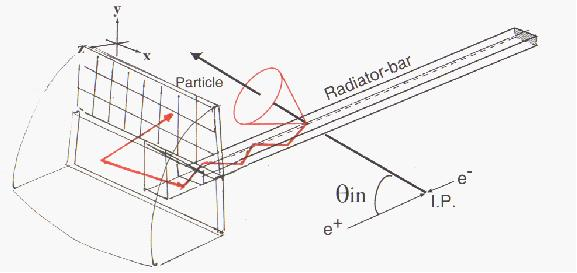

The Next Generation DIRC

Links:
SLAC Group B's R&D
page
Jose Benitez's logbook
Literature:
Focusing DIRC: A New compact Cherenkov ring imaging device
Nucl.Instrum.Meth.A382:430-440,1996
DIRC dreams: Research directions for the next generation of internally
reflected imaging counters
Nucl.Instrum.Meth.A433:456-463,1999
A focussing DIRC with avalanche photodiodes
Nucl.Instrum.Meth.A433:487-491,1999
DIRC dreams redux: Research directions for the next generation of
internally reflected imaging counters
ICFA Instrum.Bull.22:03,2001
Cherenkov Imaging Techniques for the Future High Luminosity Machines
SLAC-PUB-11019
Novel photon detectors for RICH applications
Nucl.Instrum.Meth.A502:172-182,2003
Imaging rings in Ring Imaging Cherenkov counters
Nucl.Instrum.Meth.A502:211-221,2003
Novel photon detectors for focusing DIRC prototype
Nucl.Instrum.Meth.A518:565-568,2004
Development of Photon Detectors for a Fast Focusing DIRC
Nucl.Instrum.Meth.A553:96-106,2005
DIRC Talks:
Study of the Hodoscopes used in testing the focussing DIRC prototype at SLAC. A second hodoscope was added for the most recent beamtest aft of the detector and startcounters and its utility is analyzed relative to the other hodoscope which precedes the detector. (given at an R&D meeting September 2006).
Cherenkov Detectors in
Particle Physics - This presentation traces the history of Cherenkov detectors
from the first ideas of Seguinot and Ypsilantis to RICH detector to the CRID to
ACCs to the DIRC to prototypes of future detectors. Special emphasis is given to the
DIRC detector at BaBar, with which the presenter has personal experience.
(given to the Spaniergruppe at UT August 2006).
Return to the top,
or back to my Physics Homepage.